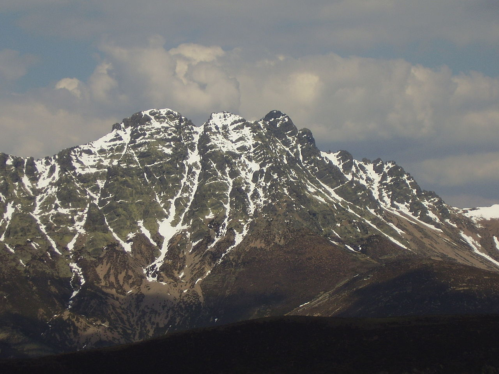
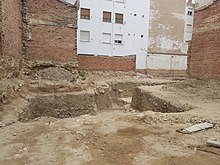
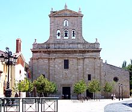
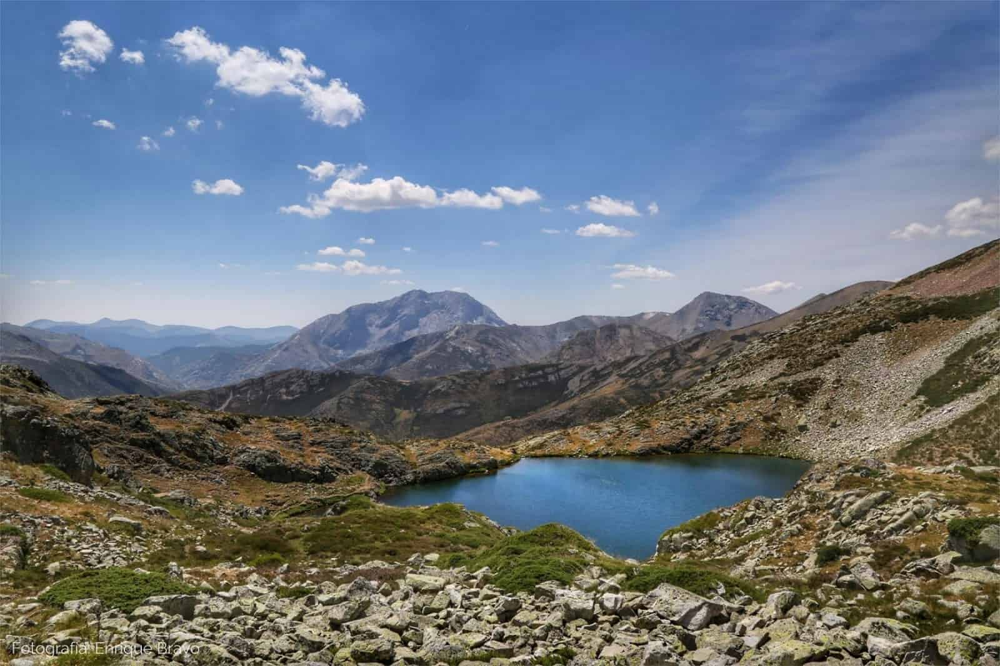
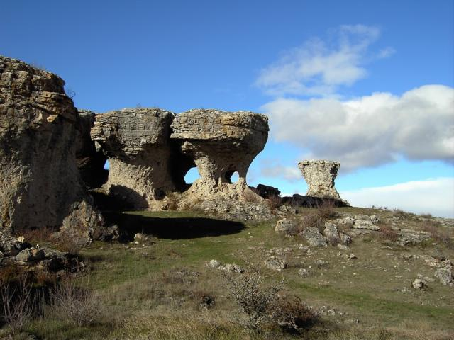
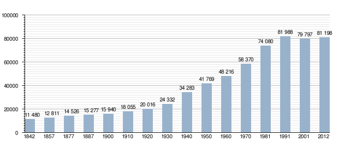

Ir a Zamora
Ir a Salamanca
Ir a leon
Ir a Valladolid
Ir a Burgos
Ir a Soria
Ir a Segovia
Ir a Ávila
LOCALIZACIÓN
La ciudad de Palencia se encuentra en el norte de la península ibérica, en la submeseta Norte. El parque del Salón de Isabel II, centro geográfico de la ciudad, está situado en las coordenadas: 42º00'40 de latitud norte y 4º31'59 de longitud oeste. Se encuentra a 749 metros sobre el nivel del mar. Dista 235 km de Madrid.
VOLVER ARRIBA
LOCALIDADES PRINCIPALES
A cotinuación se muestra un mapa interactivo de la provincia de Palencia. Si clicamos en los nombres nos redirigira a la web oficial de cada zona.

VOLVER ARRIBA
GEOGRAFÍA
Palencia se encuentra a 749 m sobre el nivel del mar, en una zona de meseta llana, rodeada por varios montes: monte "El Chivo" y monte "El Viejo". Es precisamente esta orografía la que propicia que el clima de la capital sea algo más frío que el de localidades muy próximas como Valladolid acercándose sus temperaturas medias más a ciudades como León o Burgos, situadas a mayor altitud.
PICO MÁS ALTO
El pico Curavacas (2520 msnm) situado en el macizo de Fuentes Carrionas se considera la mayor elevación de la Montaña Palentina, en las estribaciones de la cordillera Cantábrica, en España, y es, junto con el Espigüete, su cima más característica.
source:https://es.wikipedia.org/wiki/Curavacas#/media/Archivo:Curavacas.JPG
{kind=link}
VOLVER ARRIBA
HISTORIA
Edad Antigua
Los orígenes históricos de la ciudad quedan inciertos, pero de lo que sí hay constatación arqueológica es de asentamientos prerromanos en el solar de la ciudad actual, a la que los celtíberos denominaron Pallantia. El pueblo que la ocupó fue el de los vacceos: el más culto de las tribus celtíberas, agrario y con una poderosa organización militar.
El rastro más evidente de romanización que queda en la ciudad es el puente llamado Puentecillas, de origen romano aunque remodelado varias veces. Este puente permitía el acceso a la isla del Sotillo de los Canónigos. Aquí se sitúa el llamado Bolo de la Paciencia, una piedra redonda que fue el mentidero de la ciudad. El puente fue restaurado y remodelado en la Edad Media.
Excavaciones en la calle Canónigo San Martín 7, donde aparecieron varios niveles de ocupación romanos
source:https://es.wikipedia.org/wiki/Palencia#/media/Archivo:Archaeological
{kind=link}
Edad Media
La Edad Media es el período más turbulento de la historia de la ciudad, pero también el de mayor proyección en los acontecimientos en la historia del Reino de León y del Reino de Castilla. Alfonso VIII de Castilla fue el más decidido impulsor de la ciudad, al concederle fueros y el primer concejo libre, y establecer entre 1208 y 1212, a instancias del obispo Tello Téllez de Meneses, una institución educativa que fue la primera Universidad de España denominada Universidad de Palencia o Estudio General de Palencia, recibiendo la aprobación pontificia de Honorio III en 1221 y desapareciendo unas décadas más tarde. La ciudad luchó noblemente en la batalla de Las Navas de Tolosa, en 1212, lo que le supuso la adjudicación de diversos bienes.
Edad Moderna
La prosperidad económica del siglo xvi convirtió a Palencia, junto a otras provincias castellanas, en el corazón económico y demográfico del Imperio español. Ya en el siglo xviii, el acontecimiento más beneficioso para la vida de la ciudad fue la construcción del canal de Castilla impulsada por el rey Fernando VI continuada con Carlos III, una de las más representativas obras de ingeniería civil de la época en Europa, comienza en Alar del Rey y cuenta con 38 esclusas en la geografía palentina que riega de norte a sur.
Siglo XXI
En la actualidad es sobre todo una ciudad de servicios, aunque tiene una gran importancia la industria del automóvil y auxiliares, agroalimentarias y de materiales de construcción. Palencia ha experimentado profundos cambios urbanísticos. Como se ha dicho es hoy una de las ciudades con una mayor cantidad de espacios verdes por habitante de España y el centro tiene pocas calles que no sean peatonales. Estas zonas, al igual que los parques, siguen creciendo. Rodeando la ciudad se han instalado en la primera década del siglo xxi numerosos molinos eólicos que suministran energía limpia para la ciudad.
El 10 de octubre de 2006 se inauguró el Nuevo Estadio Municipal La Balastera, un gran edificio de metal y cristal con cuatro torres inclinadas y translúcidas, obra del arquitecto Francisco Mangado. Se trata de un estadio de gran tamaño y espectacularidad a pesar de que fue realizado para el Club de Fútbol Palencia, equipo que en el momento de su construcción se encontraba en segunda división B y a día de hoy ha desaparecido.
source:https://es.wikipedia.org/wiki/Palencia#/media/Archivo:Church_of_San_Pablo_in_Palencia
{kind=link}
VOLVER ARRIBA
CULTURA
Para la cultura os mostraremos un video que resume bien toda la cultura local de palencia.Gatronimia
La cocina palentina se basa en platos calientes, debido al frío clima dominante. Los ejemplos más claros son sus sopas de ajo, o la clásica sopa castellana, elaborada con pan de hogaza, agua, aceite, ajo y pimentón, a veces se añaden tacos de jamón serrano y huevos escalfados. El pan es la base de la gastronomía palentina, un ejemplo de la importancia que alcanza es el pan de Nogales, con una escuela dedicada al mismo, en la que elaboran el pan bonito, el lechuguino, los molletes, las tortas de chicharrones y otras muchas clases de panes, hechos con harina de Tierra de Campos, de gran calidad.
Las carnes: Palencia, como el resto de Castilla, puede afirmar que las carnes nutren a sus gentes. La perdiz (en escabeche), y también la codorniz, en estas tierras se consideran de excelente calidad, el lechazo es la carne por excelencia de palencia y posee denominación de origen. En temporada de matanza pueden degustarse las morcillas de sangre de Palencia, de la misma sangre que luego se convierte en ingrediente esencial de la sopa negra. Los embutidos también son de buena calidad.
Los pescados: Los cangrejos que se pescan en los ríos palentinos son los crustáceos por excelencia. De los ríos también se obtienen truchas (trucha en escabeche).
Las Verduras: En cuanto a su riqueza hortícola, son excelentes las patatas pero sobre todo la menestra palentina o el pisto y los guisantes de Palencia.
Los postres: Destaca la cazuela de san Antolin; también son muy recomendables las jaleas de frutas autóctonas, como los arándanos, o el queso (sobre todo de oveja) y otros productos de repostería más elaborados.
VOLVER ARRIBA
NATURALEZA
La naturaleza invade hasta el último rincón de la provincia de Palencia, desde sus interrumpidas llanuras en el Cerrato Palentino y las grutas que conforman sus bodegas, pasando por los infinitos mares de Tierra de Campos que desembocan a los pies de la grandiosa Montaña Palentina.
Sin duda alguna, Palencia ofrece una variedad de entornos naturales que destacan por su singularidad y calidad ambiental. Por ello, la provincia de Palencia cuenta con cinco Espacios Naturales Protegidos, un Parque Natural y un GeoParque UNESCO. Organismos que velan por la sostenibilidad del entorno y proporcionan una garantía de calidad.
 
VOLVER ARRIBA
TRADICIONES
Listas de las Fistas populares:VOLVER ARRIBA
OTROS ASPECTOS
Históricamente ha sido un centro receptor de migración interior, especialmente durante las décadas 1950-1970 en el llamado éxodo rural, al tener una industria más activa y dinámica que las comarcas circundantes como Tierra de Campos y El Cerrato. El crecimiento anual relativo fue del 1,01 % (periodo 2005-2006), siendo una de las pocas excepciones de toda la provincia, que por lo general pierde población, y así lo ha vuelto a hacer desde 2009. La ciudad está habitada por 78 892 habitantes (INE 2017).
VOLVER ARRIBA